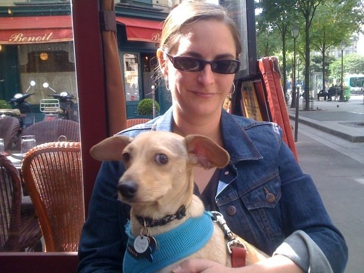

Why I'm at DBCI'm currently attending Dev Bootcamp in San Francisco. Before making the leap into web development, I worked as a production manager and lead in the apparel and luxury consumer goods industries, and before that, I was an interaction designer - all wireframes all the time. In October of 2013, I attended a Railsbridge workshop and really enjoyed it. I first heard of Dev Bootcamp on that day, but I didn't think that it was something I would ever be qualified to do. I decided to spend some time teaching myself Ruby to see how I liked coding. After about six months of working through Zed Shaw's Learn Ruby the Hard Way and going to Ruby meetups, I applied and was accepted to DBC. My immediate goal after DBC is to find work at an entry level dev, and keep learning as much as I can. In the long term, I'd like to work on developing applications to help seniors stay connected with their communities. A few more or less interesting things about me personally:
|
 |
Valerie Smith's DBC Blog
FIND ME ON